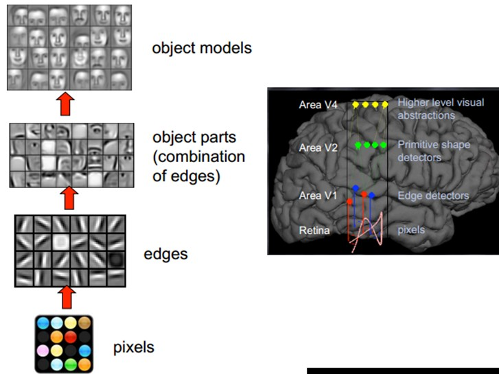
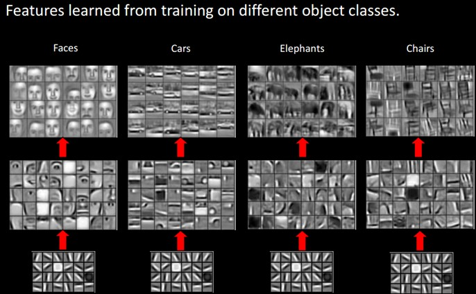
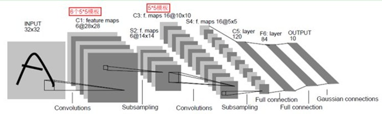
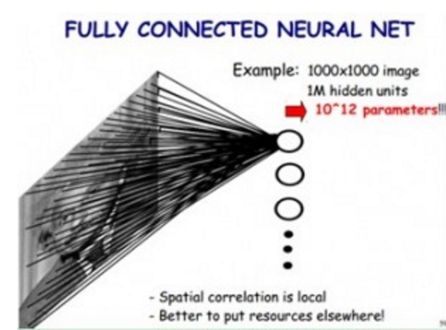
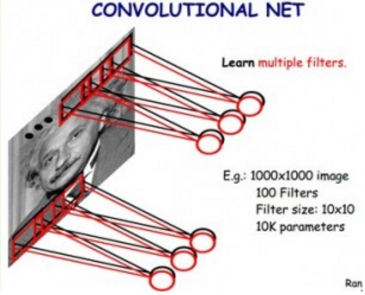

本文的主要目的，是简单介绍时下流行的深度学习算法的基础知识，本人也看过许多其他教程，感觉其中大部分讲的还是太过深奥，于是便有了写一篇科普文的想法。博主也是现学现卖，文中如有不当之处，请各位指出，共同进步。
本文的目标读者是对机器学习和神经网络有一定了解的同学（包括：梯度下降、神经网络、反向传播算法等），机器学习的相关知识强烈推荐吴恩达大神的机器学习课程
深度学习简介
深度学习是指多层神经网络上运用各种机器学习算法解决图像，文本等各种问题的算法集合。深度学习从大类上可以归入神经网络，不过在具体实现上有许多变化。深度学习的核心是特征学习，旨在通过分层网络获取分层次的特征信息，从而解决以往需要人工设计特征的重要难题。深度学习是一个框架，包含多个重要算法:
- Convolutional Neural Networks(CNN)卷积神经网络
- AutoEncoder自动编码器
- Sparse Coding稀疏编码
- Restricted Boltzmann Machine(RBM)限制波尔兹曼机
- Deep Belief Networks(DBN)深信度网络
- Recurrent neural Network(RNN)多层反馈循环神经网络神经网络
对于不同问题(图像，语音，文本)，需要选用不同网络模型才能达到更好效果。
此外，最近几年增强学习(Reinforcement Learning)与深度学习的结合也创造了许多了不起的成果，AlphaGo就是其中之一。
人类视觉原理
深度学习的许多研究成果，离不开对大脑认知原理的研究，尤其是视觉原理的研究。
1981 年的诺贝尔医学奖，颁发给了 David Hubel（出生于加拿大的美国神经生物学家） 和TorstenWiesel，以及 Roger Sperry。前两位的主要贡献，是“发现了视觉系统的信息处理”，可视皮层是分级的。
人类的视觉原理如下：从原始信号摄入开始（瞳孔摄入像素 Pixels），接着做初步处理（大脑皮层某些细胞发现边缘和方向），然后抽象（大脑判定，眼前的物体的形状，是圆形的），然后进一步抽象（大脑进一步判定该物体是只气球）。下面是人脑进行人脸识别的一个示例：

对于不同的物体，人类视觉也是通过这样逐层分级，来进行认知的：

我们可以看到，在最底层特征基本上是类似的，就是各种边缘，越往上，越能提取出此类物体的一些特征（轮子、眼睛、躯干等），到最上层，不同的高级特征最终组合成相应的图像，从而能够让人类准确的区分不同的物体。
那么我们可以很自然的想到：可以不可以模仿人类大脑的这个特点，构造多层的神经网络，较低层的识别初级的图像特征，若干底层特征组成更上一层特征，最终通过多个层级的组合，最终在顶层做出分类呢？答案是肯定的，这也是许多深度学习算法（包括CNN）的灵感来源。
卷积网络介绍
卷积神经网络是一种多层神经网络，擅长处理图像特别是大图像的相关机器学习问题。
卷积网络通过一系列方法，成功将数据量庞大的图像识别问题不断降维，最终使其能够被训练。CNN最早由Yann LeCun提出并应用在手写字体识别上（MINST）。LeCun提出的网络称为LeNet，其网络结构如下：

这是一个最典型的卷积网络，由卷积层、池化层、全连接层组成。其中卷积层与池化层配合，组成多个卷积组，逐层提取特征，最终通过若干个全连接层完成分类。
卷积层完成的操作，可以认为是受局部感受野概念的启发，而池化层，主要是为了降低数据维度。
综合起来说，CNN通过卷积来模拟特征区分，并且通过卷积的权值共享及池化，来降低网络参数的数量级，最后通过传统神经网络完成分类等任务。
降低参数量级
为什么要降低参数量级？从下面的例子就可以很容易理解了。
如果我们使用传统神经网络方式，对一张图片进行分类，那么，我们把图片的每个像素都连接到隐藏层节点上，那么对于一张1000x1000像素的图片，如果我们有1M隐藏层单元，那么一共有10^12个参数，这显然是不能接受的。（如下图所示）

但是我们在CNN里，可以大大减少参数个数，我们基于以下两个假设：
- 最底层特征都是局部性的，也就是说，我们用10x10这样大小的过滤器就能表示边缘等底层特征
- 图像上不同小片段，以及不同图像上的小片段的特征是类似的，也就是说，我们能用同样的一组分类器来描述各种各样不同的图像
基于以上两个，假设，我们就能把第一层网络结构简化如下：

我们用100个10x10的小过滤器，就能够描述整幅图片上的底层特征。